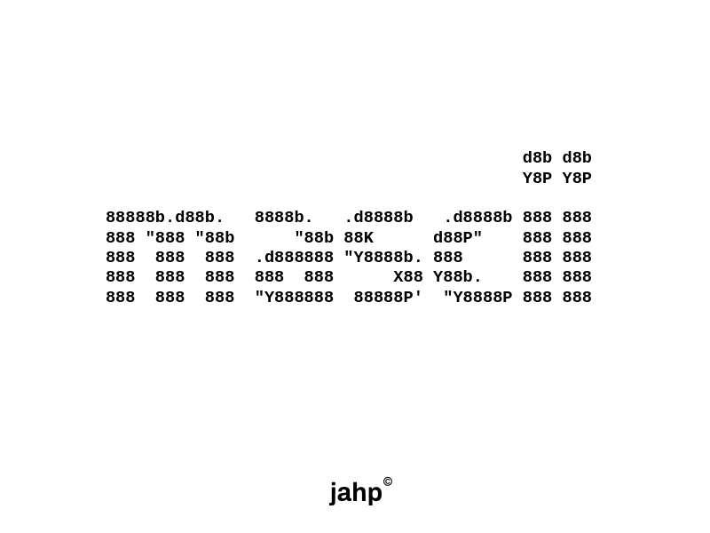
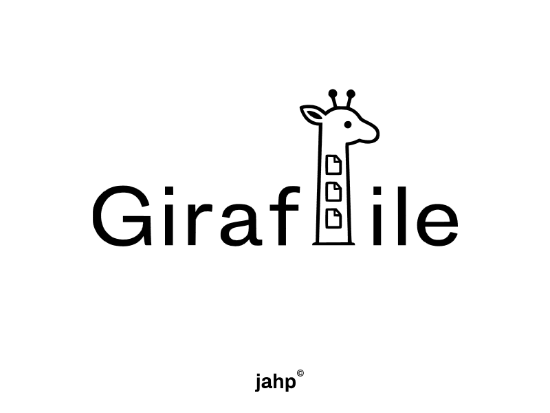

Bienvenido
Soy jahp. Soy un programador junior entusiasta de la IA (vibecoder), el software libre y la privacidad. En este portafolio encontrarás mi camino, mis proyectos y mi visión sobre la creación de software con sentido humano. Me adentré en el mundo web hace un año y medio apoyado por asistentes de IA, enfocándome siempre en la experiencia de usuario y la resolución de problemas reales.
Sobre mí
Cuento con 1.5 años de experiencia, priorizando la eficiencia y la ética. Desapruebo el envío de datos de usuario y soy un firme defensor y promotor del software libre.
Proyectos

2026-05-23 — mascii (Music ASCII Player): Reproductor de música con enfoque ascii para uso en la terminal. Estado: Activo. Repositorio oficial en GitHub.

2026-06-22 — Giraffile: Herramienta P2P para transferir archivos mediante links. Estado: Activo. Página oficial de Giraffile.